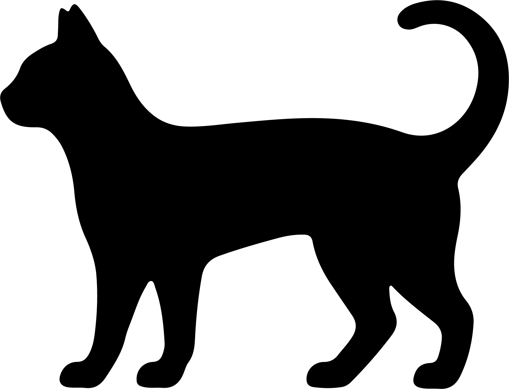

A good start to their
long run.
Cleo’s profile is complete. Here’s what comes next.
Meet Cleo.
Domestic Shorthair · Cat

- Age
- 3 years
- Weight
- 4 kg
- Profile
- Complete
Explore a cat’s life stage
Choose an example to see their result below.
Life stage: Young adult
An adult chapter, with routines that can grow around your cat’s individual needs.
- Kitten
- Young adult
- Mature adult
- Senior
Based on their age and the 2021 AAHA/AAFP feline guidelines. Life stage is not a biological-age test or a prediction of lifespan.
Read the feline life-stage guidelines (PDF, opens in a new tab)Dog life-stage results will be added once the breed-based approach is confirmed.
A little guidance.
A longer journey.
The quiz’s existing supplement result and its explanation would appear here, alongside this message.
Layout placeholder—not a calculated recommendation. This concept does not change the recommendation engine or estimate physiological age.
Review their answers
- Name
- Cleo
- Species
- Cat
- Age
- 3 years
- Breed
- Domestic Shorthair
Sample answers for this design concept. Editing the real quiz is not connected.